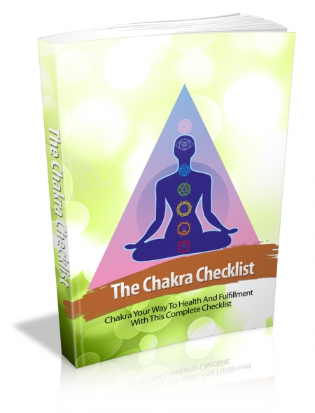

Tap into the powers of
Chakra…
“Discover How To Live
In Peace And Harmony In A World Full Of
Uncertainty And Dramatically Improve Your
Quality Of Life Today Through Chakra
Meditation!”
Finally You Can Fully
Equip Yourself With These “Must Have” Tools
For Achieving Peace And Calmness And Live A
Life Of Comfort That You Deserve!
From The Desktop of
Goddess Serendipity
RE: Unleashing the
powers of Chakra Meditation
Dear Friend,
In this world full of
uncertainty - Wars, economic crisises,
killing, rape and robbery, it's difficult for
one to lead a calm and peaceful life.
Sometimes, the unnervingness of it all can
lead to disease and complications which harm
our health.
And once get caught up in such
situations, it's hard to improve our health
situation or worse, the disease can progress
or worsen.
But here’s the good news:
The art of Chakra
Meditation CAN help you achieve peace and
calmness!
But before we go into that, ask
yourself, have you ever faced any of these
problems in your life?
-Feeling helpless and
unable to act when it comes to uncertainty.
-You lack the tools and strategies needed
for helping you overcome your troubles and
stay calm.
-You don’t have a proper support system
needed to help you deal with your life.
-Or you are totally clueless when it comes
to dealing with your condition.
Well, you are not alone. I’ve
once walked down this lost path and I told
myself that I would do whatever it takes to
figure out the key to freeing myself from my
condition and living a life of comfort I
deserve.
And after years of
experimentation and hardship, I’ve finally
found the solution, which I want to share with
you today.
Introducing…
The Chakra Checklist

Chakra Your Way To Health And
Fulfillment With This Complete Checklist
Here’s an overview of this
ultimate guide to chakra meditation:
-With this guide, you’ll be
equipped with the most powerful tools and
strategies to helping you achieve peace and
calmness via chakra meditation
-You will also be exposed to
plenty of highly effective methods for
identifying triggers and preventing them
through chakra meditation
-You’ll also get tons of extra
information on your conditions and how you can
deal with them in a variety of ways to achieve
peace and calmness with chakra meditation
Let me shed some light on some
things that may be on your mind:
Will this help free me
from my feelings of uncertainty?
Admittedly, hypnosis is a long
and hard process. But with the tools and
strategies provided in the guide, freeing
yourself will become a much easier process and
you will start seeing results fast!
Will I be able to
implement these strategies easily?
Most definitely! The strategies
for chakra meditation have been mapped out
clearly in this guide so that anyone – whether
a novice or beginner can start using it and
achieve results fast!
Wow, this is too good to
be true! Will this cost me a bomb?
Here’s the good news, NO.
I want everybody to be able to have
access to this great tools and strategies for
achieving peace and serenity because I knew
what it was like, struggling as a hopeless
sufferer without anyone to guide me… Now that
I’ve found the way, I want this ultimate guide
to “jump start” your success regardless of
your level of experience.
If you’re still sitting on the fence, here’s 5
great reasons to invest in this amazing chakra
meditation guide for achieving peace and
calmness:
So how much will this
cost you?
REAL WORLD VALUE = $97
But hey, like I said. I want
EVERYBODY to be able to afford this amazing
guide to achieving peace and calmness because
the value it provides is literally mind
blowing!
So, I’ve decided to lower the costs of this
product.
Hence, your total investment in
this ultimate guide to chakra
meditation is:
$47
$27 Only
(This is a digital download. You will
instantly be directed to the download page
upon purchase)
Best Wishes,
(Your Name)
P.S. Hurry! This Offer
is only up for the next 50 fast action
takers! We don’t want you to miss out on
this amazing opportunity!
P.P.S Remember, It’s not
how much you stand to gain, but how much you
stand to lose out by not taking action.
P.P.P.S If you’re sick
of others telling you that you can’t succeed
in chakra meditation, It’s
high time you showed them whose boss!